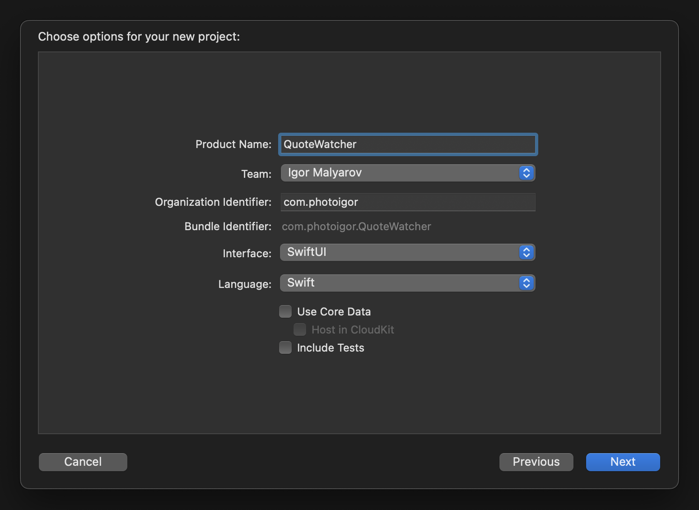
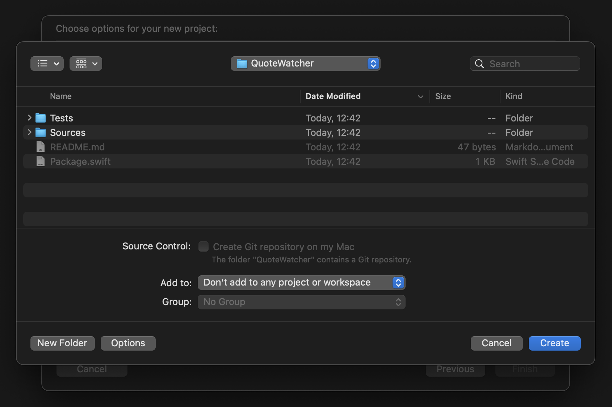
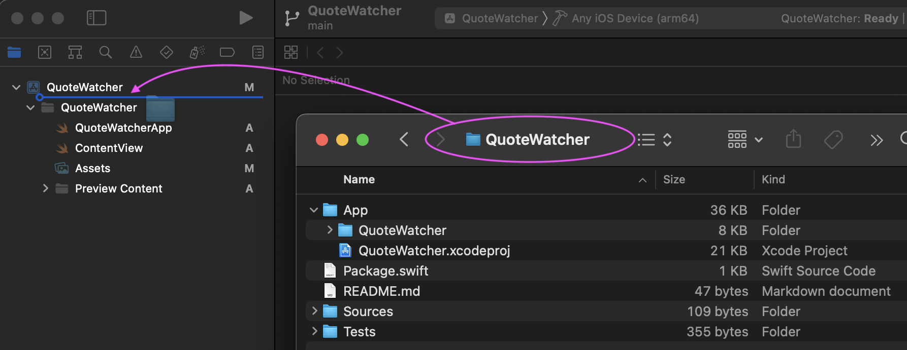
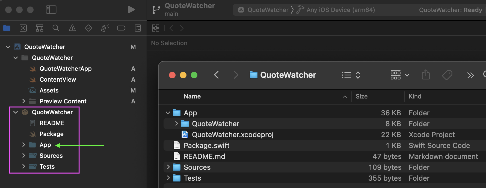
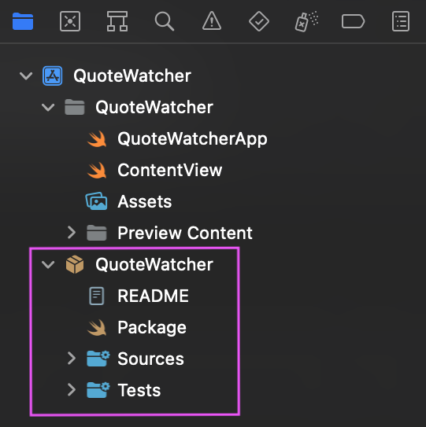

Supermodular App Scaffolding
How to create a basic scaffolding for a super modularized app
Create a new Swift Package in the terminal
$ mkdir QuoteWatcher
$ cd QuoteWatcher
$ swift package init
Initiate Git and commit
$ git init
$ git add .
$ git commit -am 'Add basic scaffolding for `QuoteWatcher` Swift Package'
Open Xcode, create a new iOS project QuoteWatcher (do not use Core Data, do not include tests)

Save to the QuoteWatcher folder (do not add to any project or workspace)

Close the project. Back in the terminal rename QuoteWatcher to App
$ mv QuoteWatcher App
Commit
$ git add .
$ git commit -m 'Create `QuoteWatcher` project'
Open the project in the Xcode. Drag the folder QuoteWatcher into the project

Local Swift Package would be added to the Xcode project.

We'll handle the App folder in a moment, but first, let's commit changes to the App/QuoteWatcher.xcodeproj/project.pbxproj file
$ git commit -am 'Add Swift Package to Xcode project'
Add an empty Swift Package to hide the App folder from the Xcode
Until syntax lighlighting issue with comments is resolved, use:
cat > App/Package.swift << ENDOFFILE
// swift-tools-version:5.6
// Leave blank. This is only here so that Xcode doesn't display it.
import PackageDescription
let package = Package(
name: "client",
products: [],
targets: []
)
ENDOFFILE
$ cat > App/Package.swift << ENDOFFILE
// swift-tools-version:5.6
// Leave blank. This is only here so that Xcode doesn't display it.
import PackageDescription
let package = Package(
name: "client",
products: [],
targets: []
)
ENDOFFILE
Reopen the project in the Xcode. Now the App folder is hidden.

Commit
$ git add .
$ git commit -m 'Add empty Swift Package to hide `App` folder from Xcode'